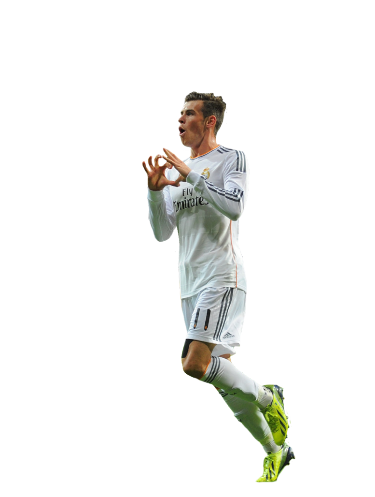

Bale
Gareth Frank Bale, mejor conocido como Bale, es un futbolista galés que juega como extremo derecho en el Real Madrid de la Primera División de España.
Considerado como uno de los más grandes talentos emergentes en el mundo en la actualidad,ha sido reconocido con numerosas distinciones, tales como el Premio Carwyn James de la BBC galesa o el premio al Mejor Jugador de la Premier el cual ganó en dos oportunidades.
También tiene a su haber otras distinciones como el premio al Mejor Jugador Joven de la Premier o el haber sido elegido en tres oportunidades como Jugador galés del año, entre muchas otras. En 2011 integró el Equipo ideal de la UEFA, y en 2013 la FIFA le incluyó en la lista de los 23 candidatos al Balón de Oro. Ese mismo año, además, la FIFA publicó un listado con los diez futbolistas más rápidos del mundo, ocupando Gareth la segunda posición al alcanzar una velocidad de hasta 34,7 km/h.16.
Bale ha ido cambiando progresivamente su posición sobre el césped. En sus inicios en el Southampton Football Club actuaba como un lateral izquierdo con mucha llegada, destacando por su velocidad y buen golpeo de balón. Estas cualidades hicieron que sus primeros técnicos visionaran en él a un carrilero con capacidad para sorprender. Esa tónica apenas se modificó en sus primeras temporadas con el Tottenham, aunque con el paso de los años fue apareciendo más y más como extremo.17 Su salto definitivo lo dio en la campaña 2010/11 cuando abandonó casi por completo el lateral de la zaga defensiva, aumentando entonces su presencia en ataque y sobre todo su implicación con el gol. En su última temporada con los Spurs, específicamente en el último tramo de aquel curso, su entrenador Villas-Boas le recolocó como mediapunta.18 Esa temporada llegó a anotar un total de veintiséis goles,19 veintiún de ellos en Liga, estableciendo así un nuevo récord dentro del club.
En 2013, se convierte en nuevo jugador por un total de 100, convirtiendose en el cjugador más caro de la historia. Con el Real Madrid ha ganado una Champions league, una Copa del rey, una supercopa de españa y un mundialito.
Internacional absoluto con la selección de fútbol de Gales, Bale debutó con 16 años y 315 días en un partido contra Trinidad y Tobago, ostentando, a partir de entonces y por muchos años, el récord de ser el debutante más joven en la historia del combinado británico. En la actualidad es el segundo tras haber sido superado en 2013 por Harry Wilson.
